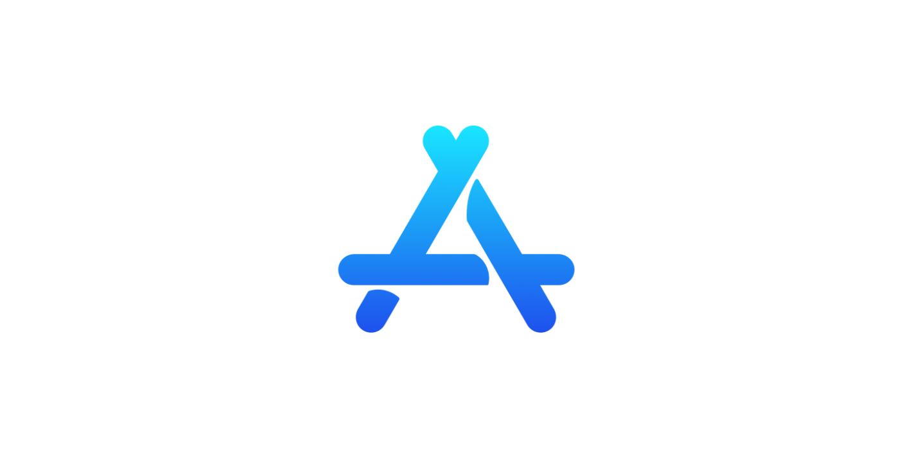

Productive APPs | 2023

APPs that I use everyday to be Productive | 2023
In 2022, I shared a list of apps that were part of my daily routine. This year, I want to reveal the new apps I've incorporated into my workflow and discuss which ones I've moved on from.
I'm always on the lookout for new apps, so if you have any favorites that I haven't mentioned, please feel free to share them with me. Additionally, if you're curious about how I integrate these apps into my daily routine, reach out to me. I'd be happy to demonstrate their use in a personalized demo.
My current app selection has been influenced significantly by the VMware/Broadcom merger.
Recent APPs:
Recently, I've begun using these apps to boost my productivity:
| APP | Usage |
|---|---|
| Google Suite of APPs - Gmail - Google Calendar - Chat - Spaces - Tasks - Keep - Docs-Sheets-Slides | I use Everyday. |
| Notion | I use the Web Clipping Feature the most to strip out all adverting, etc... from web pages, when I want to just save the text. |
| ChatGPT | Daily, I engage in practices that enhance my writing skills and develop code for automation purposes. |
Proven APPs:
Here's a list of apps that have become staples in my daily work and blogging routines. These tools have consistently proven their value in my workflows.:
| APP | Usage |
|---|---|
| TickTick - To-Do and Notes App in one. | I use everyday. Where I save all my To-Do's and Notes. I like the Note filtering a lot! |
| CleanShot X - Screen Shot and Screen recording App | I use everyday. The scrolling screen capture is awesome! |
| BetterSnapTool - easily manage your window positions | I use everyday. I couldn't use a MAC without having the shortcut keys for Window Management |
| Zoom - Online Meetings, Chat, etc... | I use everyday for calls with customers. I feel it is the easiest to use for online meetings. |
| Visual Studio Code - Creating Code | I use often. Used to create my Blog post and any Automation scripts I create. |
| Github Desktop | I use often. I used for all GitHub Repository Updates. |
| Affinity Photo - Photo editing | Used for all image editing that I do. |
| VMware Fusion | Used for creating VMs on my Macbook Pro. |
| Termius - SSH Client | I use for all SSH in my Lab area. |
| Forklift - SFTP Client | I use for file management and syncing folders. |
| Hugo - The world’s fastest framework for building websites | Used to create this Blog Site! |
| Backblaze - Online Backup to keep all my important files offsite. | Used for all personal Backups. |
| Dashlane - Password Manager | Used for all personal PW management |
| Raindrop.io - All-in-one bookmark manager | Used to keep all my bookmarks in one location. |
Browser Ranking in order of usage:
4. Apple Safari
APPs no longer used everyday:
| APP | Usage |
|---|---|
| Slack | Replaced by Google Chat and Spaces by employer |
| mmhmm - Makes on-screen meetings and presentations a little more fun. | I still think this is a Cool App. I just don't use it much. |
| Microsoft Office - Word, Excel, Outlook, Powerpoint, OneNote | Replaced by Google APPs by employer |
| Microsoft Teams - Online Meetings, Chat, etc... | Employer removed from list of available APPs. I always liked Zoom better anyway. |
- If you found this article helpful and would like to show your appreciation, consider buying me a coffee to kickstart my day.